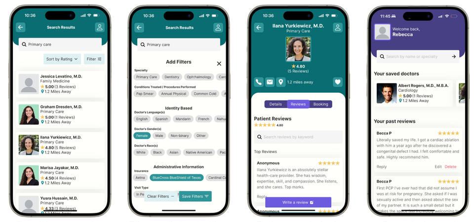
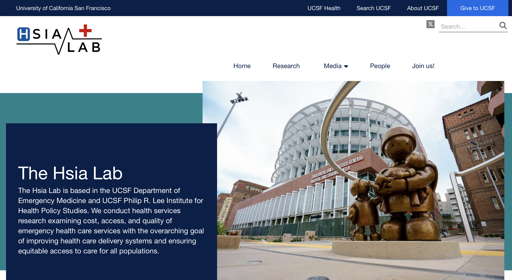

Engineering & Product
Tech Portfolio
UX engineer with a background in cognitive science and research. Currently open to full-time user experience engineering, design, and research roles.
↓ Download my resumeSkills & Stack
Work History
UX Researcher
Autograph.ai
Led end-to-end user research (recruiting → interviews → synthesis) to uncover usability issues and shape product direction, delivering prioritized insights to engineering and product. Built and managed a 20-person early user community to enable rapid, iterative feedback and validate emerging use cases.
User Experience Engineering Intern
Identified design-to-engineering workflow bottlenecks and built a TypeScript/Node.js pipeline leveraging the Figma API to automate handoff tracking and reporting. Reduced manual effort from 10 hours/month to 10 minutes while increasing visibility for cross-functional teams.
Web Development Intern
UCSF / Hsia Lab
Designed and developed a public-facing healthcare research website, translating designs into Drupal and validating accessibility through iterative testing with 36 users to ensure clarity for broad audiences.
Projects

QUEERx
Project Website ↗Search for doctors by location, specialty, gender, and more. Read reviews of doctors that are specific to LGBTQ+ patients. Lean on the Queer community and spread the word about safe, accessible healthcare.

Hsia Lab
Project Website ↗Designed and developed a public-facing healthcare research website, translating designs into Drupal and validating accessibility through iterative testing with 36 users to ensure clarity for broad audiences.